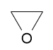
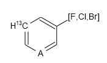
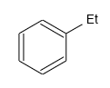

Creating Molecule¶
Molecule is the core concept in chemoinformatics. This chapter will illustrate some basic operations of molecules, especially organic molecules with connection table, in JavaScript code.
Creating Molecule with Atoms and Bonds¶
The following code create a new oxirane molecule with three atoms and three bonds:[1]
// create molecule first
var mol = new Kekule.Molecule();
// add three atoms to molecule, property setter can be called cascadely
var a1 = (new Kekule.Atom()).setSymbol('C').setCoord2D({'x': -0.4, 'y': 0.23});
var a2 = (new Kekule.Atom()).setSymbol('C').setCoord2D({'x': 0.4, 'y': 0.23});
var a3 = (new Kekule.Atom()).setSymbol('O').setCoord2D({'x': 0, 'y': -0.46});
mol.appendNode(a1);
mol.appendNode(a2);
mol.appendNode(a3);
// add three bonds to molecule
var b1 = (new Kekule.Bond()).setBondOrder(1).setConnectedObjs([a1, a2]);
var b2 = (new Kekule.Bond()).setBondOrder(1).setConnectedObjs([a2, a3]);
var b3 = (new Kekule.Bond()).setBondOrder(1).setConnectedObjs([a3, a1]);
mol.appendConnector(b1);
mol.appendConnector(b2);
mol.appendConnector(b3);
Molecule oxirane created with code:
Atoms or bonds can also be easily removed from existing molecule:[1]
// remove atom O related bonds in molecule
mol.removeNodeAt(2); // the atom index starts from 0
// or mol.removeNode(mol.getNodeAt(2));
mol.removeConnectorAt(1);
// or mol.removeConnector(mol.getConnectorAt(1));
mol.removeConnectorAt(2);
Molecule after removing atom O:

Aside from normal atoms, pseudo atom and variable atom are also supported:[1]
var mol = new Kekule.Molecule();
// add atoms to molecule
mol.appendNode(new Kekule.Atom().setSymbol('C').setCoord2D({x: 0, y: 0.80}));
// explicit set mass number of an atom
mol.appendNode(new Kekule.Atom().setSymbol('C').setMassNumber(13).setCoord2D({x: -0.69, y: 0.40}));
mol.appendNode(new Kekule.Atom().setSymbol('C').setCoord2D({x: -0.69, y: -0.40}));
// a pseudo atom
mol.appendNode(new Kekule.Pseudoatom().setAtomType(Kekule.PseudoatomType.ANY).setCoord2D({x: 0, y: -0.80}));
mol.appendNode(new Kekule.Atom().setSymbol('C').setCoord2D({x: 0.69, y: -0.40}));
mol.appendNode(new Kekule.Atom().setSymbol('C').setCoord2D({x: 0.69, y: 0.40}));
// a variable atom
mol.appendNode(new Kekule.VariableAtom().setAllowedIsotopeIds(['F', 'Cl', 'Br']).setCoord2D({x: 1.39, y: 0.80}));
// add bonds to molecule
// here a shortcut method appendBond(atomIndexes, bondOrder) is used
mol.appendBond([0, 1], 1);
mol.appendBond([1, 2], 2);
mol.appendBond([2, 3], 1);
mol.appendBond([3, 4], 2);
mol.appendBond([4, 5], 1);
mol.appendBond([5, 0], 2);
mol.appendBond([5, 6], 1);
The result will be:
Even the subgroup:[1]
var mol = new Kekule.Molecule();
// add atoms to molecule
mol.appendNode(new Kekule.Atom().setSymbol('C').setCoord2D({x: 0, y: 0.80}));
mol.appendNode(new Kekule.Atom().setSymbol('C').setCoord2D({x: -0.69, y: 0.40}));
mol.appendNode(new Kekule.Atom().setSymbol('C').setCoord2D({x: -0.69, y: -0.40}));
mol.appendNode(new Kekule.Atom().setSymbol('C').setCoord2D({x: 0, y: -0.80}));
mol.appendNode(new Kekule.Atom().setSymbol('C').setCoord2D({x: 0.69, y: -0.40}));
mol.appendNode(new Kekule.Atom().setSymbol('C').setCoord2D({x: 0.69, y: 0.40}));
// create a sub group
var sub = new Kekule.SubGroup();
// add atoms/bonds to sub structure
sub.appendNode(new Kekule.Atom().setSymbol('C').setCoord2D({x: 1.39, y: 0.80}));
sub.appendNode(new Kekule.Atom().setSymbol('C').setCoord2D({x: 2.0, y: 0.40}));
sub.appendBond([0, 1], 1);
// atom 0 in subgroup connected with main body
sub.appendAnchorNode(sub.getNodeAt(0));
sub.setAbbr('Et');
// then add sub structure to molecule
mol.appendNode(sub);
// add bonds to molecule
// here a shortcut method appendBond(atomIndexes, bondOrder) is used
mol.appendBond([0, 1], 1);
mol.appendBond([1, 2], 2);
mol.appendBond([2, 3], 1);
mol.appendBond([3, 4], 2);
mol.appendBond([4, 5], 1);
mol.appendBond([5, 0], 2);
mol.appendBond([5, 6], 1); // bond connecting subgroup
The result:
Multicenter Bonds¶
The toolkit supports multicenter bonds (e.g., B-H-B bond in diborane and Cp-Fe bond in ferrocene). Such bond can be created by assigning multiple connected atoms:[1]
// create molecule
var mol = new Kekule.Molecule();
// add atoms to molecule
mol.appendNode(new Kekule.Atom().setSymbol('B').setExplicitHydrogenCount(2).setCoord2D({x: -1, y: 0}));
mol.appendNode(new Kekule.Atom().setSymbol('B').setExplicitHydrogenCount(2).setCoord2D({x: 1, y: 0}));
mol.appendNode(new Kekule.Atom().setSymbol('H').setCoord2D({x: 0, y: 1}));
mol.appendNode(new Kekule.Atom().setSymbol('H').setCoord2D({x: 0, y: -1}));
// add two multicenter bond: B-H-B
mol.appendBond([0, 2, 1], 1);
mol.appendBond([0, 3, 1], 1);

Note
Currently the toolkit draws multicenter bond by simply connecting all centers. This should be improved in the future.
Bond-bond Connection¶
Special bond-bond connection (e.g., in Zeise’s salt) is also supported:[1]
// create molecule
var mol = new Kekule.Molecule();
var atomPt = new Kekule.Atom(); // Pt atom
mol.appendNode(atomPt.setSymbol('Pt').setCoord2D({x: 0.35, y: 0}));
mol.appendNode(new Kekule.Atom().setSymbol('Cl').setCoord2D({x: 0.35, y: 0.80}));
mol.appendNode(new Kekule.Atom().setSymbol('Cl').setCoord2D({x: 0.35, y: -0.80}));
mol.appendNode(new Kekule.Atom().setSymbol('Cl').setCoord2D({x: 1.14, y: 0}));
mol.appendNode(new Kekule.Atom().setSymbol('C').setCoord2D({x: -0.45, y: 0.40}));
mol.appendNode(new Kekule.Atom().setSymbol('C').setCoord2D({x: -0.45, y: -0.40}));
mol.appendBond([1, 0], 1, Kekule.BondType.IONIC); // Pt-Cl
mol.appendBond([2, 0], 1, Kekule.BondType.IONIC); // Pt-Cl
mol.appendBond([3, 0], 1, Kekule.BondType.IONIC); // Pt-Cl
var doubleBond = mol.appendBond([4, 5], 2); // C=C
// create bond-bond connection
var coordinateBond = new Kekule.Bond(); // (C=C)-Pt
coordinateBond.setBondType(Kekule.BondType.COORDINATE);
coordinateBond.setConnectedObjs([doubleBond, atomPt]);
mol.appendConnector(coordinateBond);
However, it is very rare to create a molecule by pure JavaScript codes. Usually user loads a molecule from external data (e.g., a file or a piece of string). This process will be introduced at next part of this tutorial.
| [1] | (1, 2, 3, 4, 5, 6) Example of this chapter can be found and run at here. |